CircleU
| CircleU | ||
| Daniel | |||
| James | |||
| Priya | |||
| Leo | |||
| Sofia |
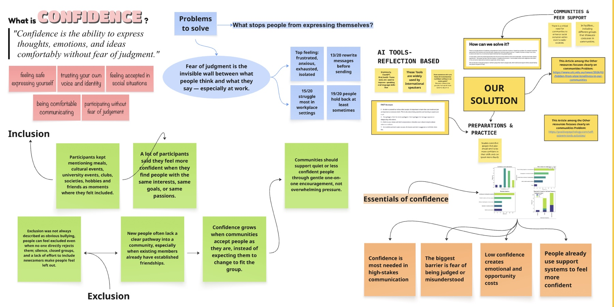
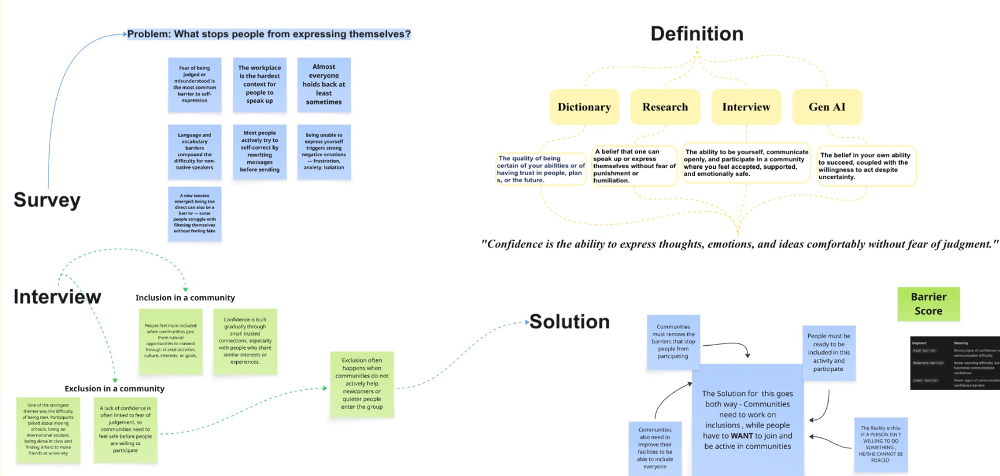
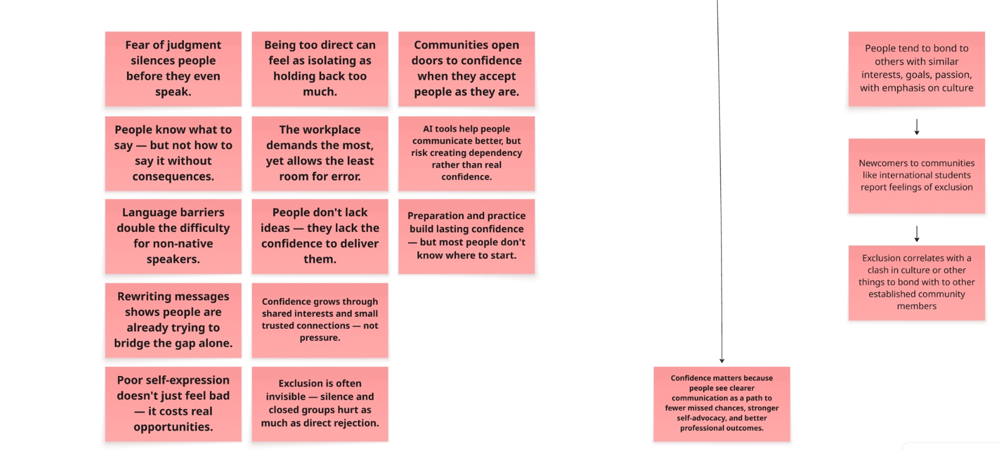
| P0 | |
| P1 | |
| P2 | |
| — |
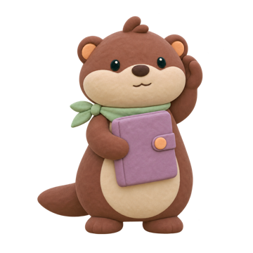
| ID |
|---|
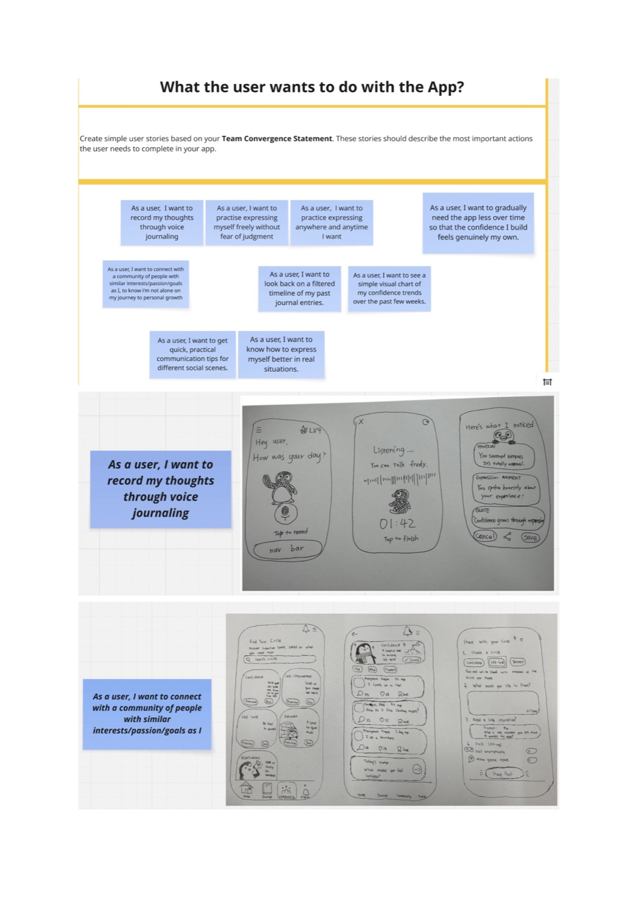
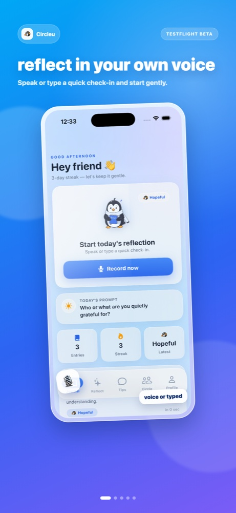
| # | Sev |
|---|
Cocoa
Sage
Oat
Cream
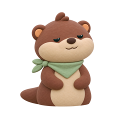
Calm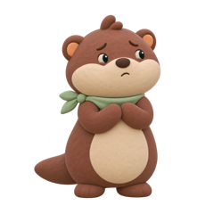
Worried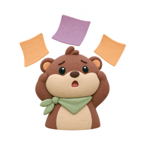
Overloaded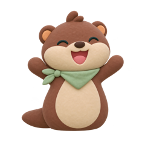
Happy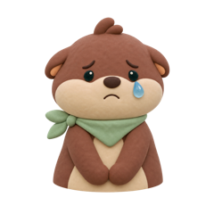
Sad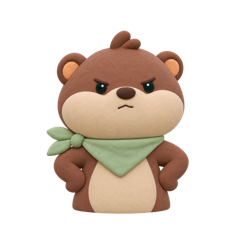
Frustrated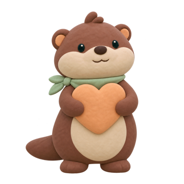
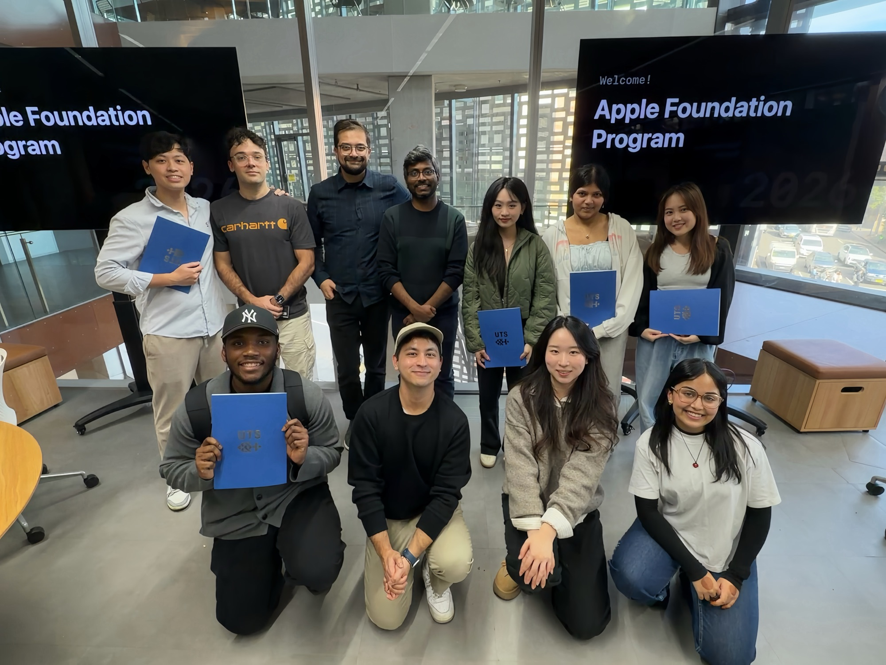
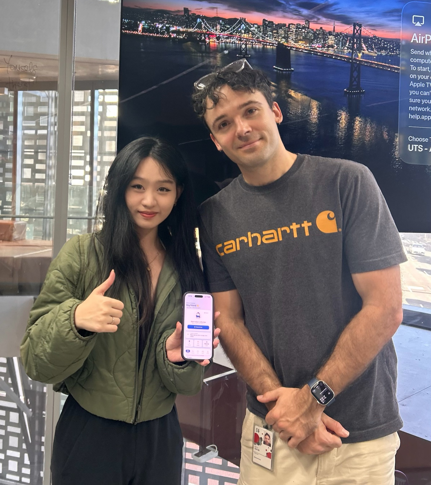